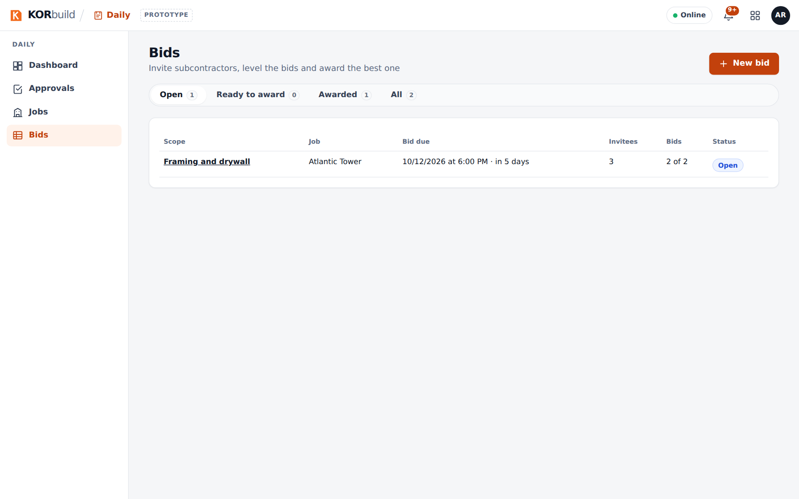
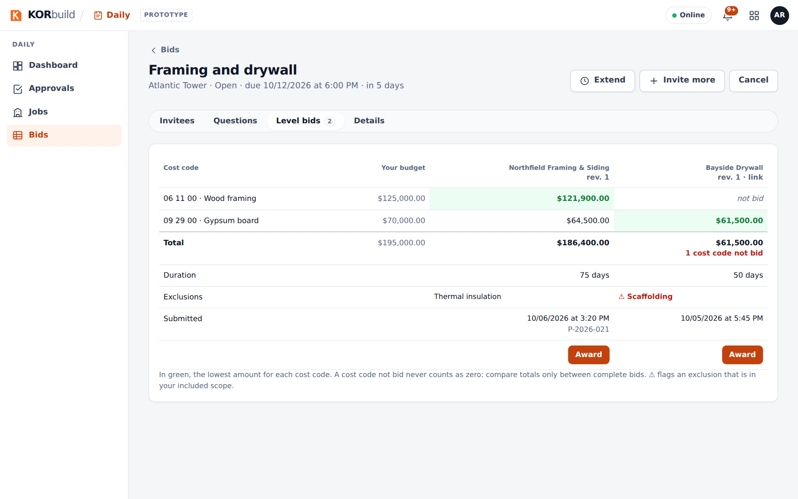

Bids is how one company invites others to bid on a scope of work, compares the bids and awards one — all inside KORbuild. The company that hires is the contracting company: a general contractor hiring subcontractors, or a subcontractor passing part of its work to another one (subcontracting). The invited companies bid from Measure Takeoff when they have a KORbuild account, or through a private link when they do not.
An invitation can go from any company to any company: general contractor to subcontractor, general contractor to general contractor, or subcontractor to subcontractor.
Bids come with the plan, like Settings. They are not a separate purchase.
Why it matters
- One place for the whole bid. Package, invitations, answers, questions, bids, leveling and award — no spreadsheets and email threads to reconcile.
- Each company sees only its own. An invited company never sees who else was invited, the others' amounts or the winning amount.
- Leveling that tells the truth. A cost code without a price shows as not bid, never as zero; an exclusion that is in your included scope is flagged before you award.
- The award links the two jobs. The winner creates its job from the won project and it is already linked to the contracting company's job.
Who takes part
| Who | Where | What they do |
|---|---|---|
| Contracting company (admin, project manager) | Bids | Builds the package, invites, answers questions, levels the bids, awards. |
| Invited company with KORbuild (admin, estimator) | Measure Takeoff › Invitations | Opens the invitation, bids or declines, measures in a project created from it and submits through the platform. |
| Invited company without KORbuild | A private link | Sees the invitation, answers, asks and submits the bid PDF with the total. No account needed. |
How a bid goes
| Step | What happens |
|---|---|
| 1. Package | The contracting company describes the scope, picks the cost codes and the due date, and chooses the invitees from its Contacts. |
| 2. Invitations | Each invitee gets it in KORbuild (with an account) or by a private link (without one). |
| 3. Answer | I'll bid creates a project in Measure Takeoff; Decline can carry a reason. |
| 4. Questions | Each answer goes to all invitees (without saying who asked) or only to who asked. |
| 5. Bids | Submitted through the platform, by cost code. Each new one is a revision; nothing is edited. |
| 6. Leveling | Side by side, by cost code, with duration, exclusions and requirements. |
| 7. Award | The bid closes; the others are told they were not selected, without the amount. |
| 8. Job | The winner's project becomes Won and its job is created linked to the contracting company's job. |

